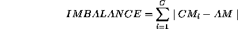
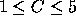
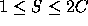

| Station Balance |
The International Space Station contains many centrifuges in its labs. Each centrifuge will have some number (C) of chambers each of which can contain 0, 1, or 2 specimens. You are to write a program which assigns all S specimens to the chambers such that no chamber contains more than 2 specimens and the following expression for IMBALANCE is minimized.

where:
Input to this program will be a file with multiple sets of input. The first line of each set will contain two numbers. The first number (  ) defines the number of chambers in the centrifuge and the second number (  ) defines the number of specimens in the input set. The second line of input will contain S integers representing the masses of the specimens in the set. Each specimen mass will be between 1 and 1000 and will be delimited by the beginning or end of the line and/or one or more blanks.
For each input set, you are to print a line specifying the set number (starting with 1) in the format "Set #X" where "X" is the set number.
The next C lines will contain the chamber number in column 1, a colon in column number 2, and then the masses of the specimens your program has assigned to that chamber starting in column 4. The masses in your output should be separated by exactly one blank.
Your program should then print ``IMBALANCE = X" on a line by itself where X is the computed imbalance of your specimen assignments printed to 5 digits of precision to the right of the decimal.
The final line of output for each set should be a blank line. (Follow the sample output format.)
2 3 6 3 8 3 5 51 19 27 14 33 5 9 1 2 3 5 7 11 13 17 19
Set #1 0: 6 3 1: 8 IMBALANCE = 1.00000 Set #2 0: 51 1: 19 27 2: 14 33 IMBALANCE = 6.00000 Set #3 0: 1 17 1: 2 13 2: 3 11 3: 5 7 4: 19 IMBALANCE = 11.60000